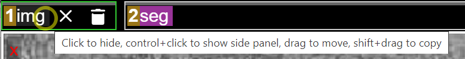
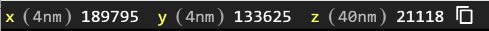
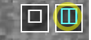
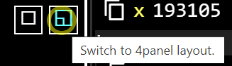
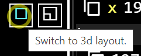
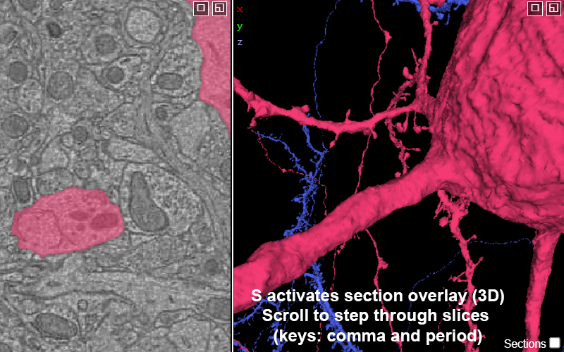
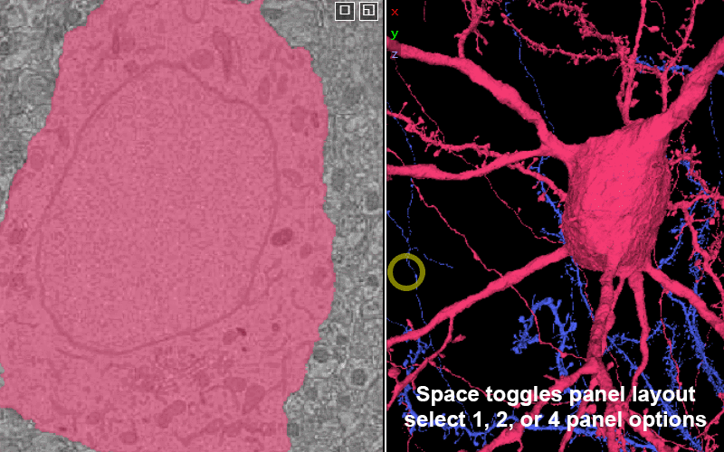
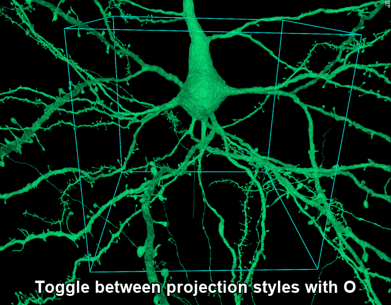
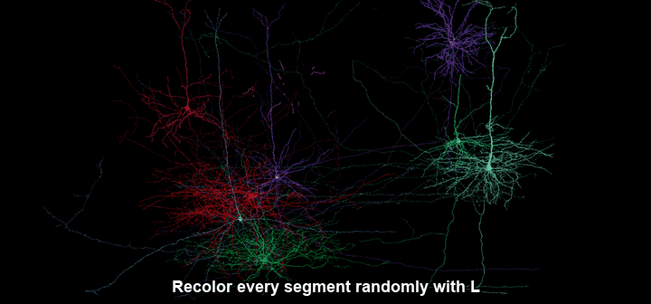
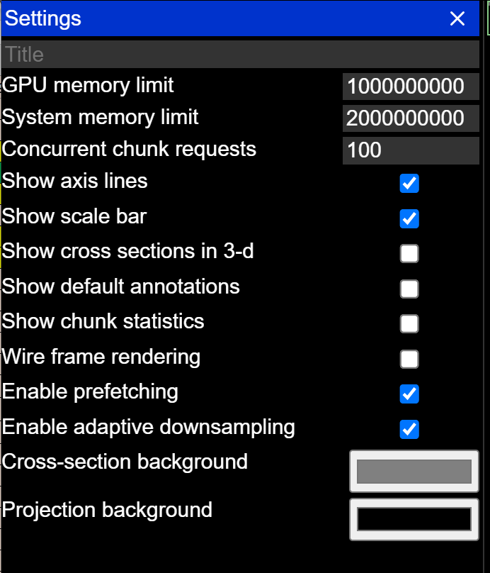

Neuroglancer Guide
Neuroglancer is a browser-based viewer for large volumetric datasets. This guide is a quick visual reference for finding your way around the interface and navigating in both the 2D image panels and the 3D view. Each animation shows the action; the note beside it gives the key combination.
The exact toolbar and panels vary a little between deployments (for example Spelunker, the MICrONS viewer). The controls and shortcuts shown here work the same way across all of them.
The Neuroglancer interface
When you open a Neuroglancer link you will see one or more panels showing the data, a row of layer tabs across the top, a coordinate readout, and a toolbar in the top-right corner (see Toolbar & settings below).
Layer tabs
The tabs across the top of the viewer are the layers — the separate pieces of data in the scene (for example an EM image layer and a segmentation layer).

- Click a tab to turn that layer on or off.
- Ctrl-ClickCtrl-Click a tab to open its side panel.
- Drag a tab to reorder it, or Shift-DragShift-Drag to copy it.
Coordinates
The coordinate readout shows the current position (in nanometers). Click it to paste in a coordinate, or click the copy icon to copy the current location.

Panel layout
Switch between layouts with the spacespace key, or by clicking the box-in-box icon in the upper corner of any panel. You can choose a 1-panel, 2-panel, or 4-panel view.

2 panel — a 2D slice beside the 3D view.

4 panel — three 2D slices plus the 3D view.

3D only — just the 3D view.
The xy plane is in the plane of imaging and has the highest resolution; the default 2-panel view is xy-3d.
Controlling perspective and overlays
These toggles change how the scene is displayed.

Add section overlay — SS toggles to add the current section(s) from the 2D views to 3D.
Move through the section slices — mouse wheel, or ,, / ...

Cycle panel layouts — spacespace.

Toggle projection style — OO. Switches between perspective and orthographic views. Orthographic equalizes depth, so a scale bar appears.
Visualization

Recolor all segments — LL. Assigns a fresh random color to every segment, which can help when neighboring cells overlap.
Toolbar & settings
The toolbar in the upper-right corner opens the side panels and tools:
| Icon | Opens | What it does |
|---|---|---|
| Share | Creates a shareable, shortened link that captures your current view, visible segments, and annotations. | |
| Palette | Shows the tool palette list (includes default Shader Controls). | |
| Layers | Shows the list of data layers (images, segmentations, annotations). | |
| Details | Shows details submenu for whatever you have selected. | |
| Controls | Opens layer side panel, controls for the active layer (color, opacity, shaders). | |
| JSON | Opens the raw JSON state — the full, editable definition of the scene. | |
| Screenshot | Opens the built in screenshot tool. | |
| Copy URL | Copy the full URL to the clipboard. | |
| Shortcuts | Lists every keyboard and mouse binding. | |
| Settings | Global settings (axis lines, scale bar, memory limits, backgrounds). |
The Settings (gear) panel controls display options for the whole viewer:

Keyboard shortcuts
| Key | Action |
|---|---|
| Left-ClickLeft-Click + drag | Rotate (3D) / pan (2D) |
| ShiftShift + Left-ClickLeft-Click + drag | Pan (3D) |
| Center the clicked point in every panel | |
Ctrl-ScrollCtrl-Scroll |
Zoom |
| Mouse wheel | Move between slices |
| ,, / .. | Move between slices |
SpaceSpace |
Cycle panel layouts |
AA |
Show / hide the colored axis lines |
SS |
Show / hide the 2D slice in the 3D view |
LL |
Recolor all segments globally |
OO |
Switch between 3D orthographic and projection views |
ZZ |
Snap to the nearest axis (also undoes a sheared 2D view) |
Pressing ZZ is handy if you have “sheared” the 2D view with ShiftShift + Left-ClickLeft-Click + drag and want to return to the original orientation.